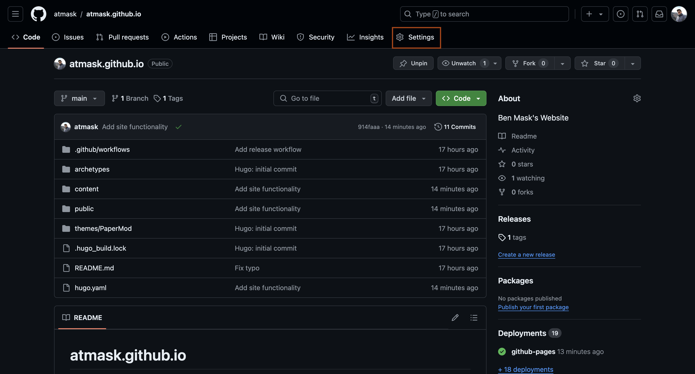
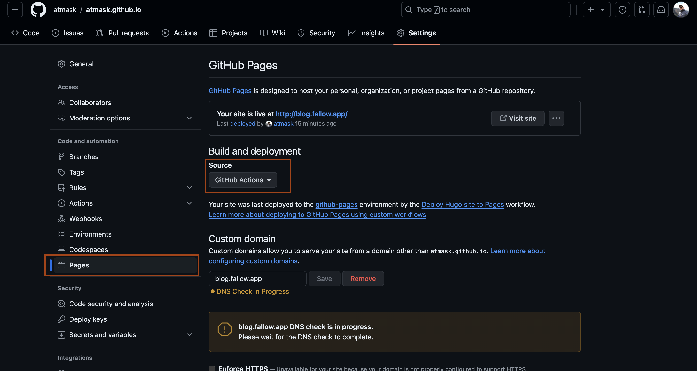

Big Idea
The goal of this post is to capture the steps required to get started with Hugo and GitHub Pages. Hugo is a Go-based static site generation tool. GitHub Pages is a feature of GitHub that allows anyone with a GitHub account to host a static site.
Part 1: Setting up GitHub Pages
In order to serve your site, you will need somewhere to host it. GitHub offers a free service called GitHub Pages that we will use for this purpose. GitHub Pages offers the free hosting of static website content. This means we will be able to build our Hugo site into a static site and then serve that via GitHub Pages.
Create GitHub Pages Repo
To get started with GitHub Pages for your blog, you will first need a repo in which you’ll store your website content. GitHub Pages offers websites for individual projects or for your user. For this tutorial, we will use the user GitHub Pages. The first step to creating this Pages site is creating a repo in your GitHub account that follows the naming scheme: <username>.github.io (substitute <username> with your GitHub username). Select Initialize this repository with a README and then create the repo.
Note: Your repository must be a public repo for Pages to work.
After creating your repository, navigate to the repository’s main page and click on Settings: 
From the Settings page navigate to the Pages under Code and Automation on the side menu: 
From here you will want to change your Build and deployment configuration to GitHub Actions. This will be required later when we want to specify a GitHub Actions workflow to build our static site content with Hugo.
For now, leave the Custom domain configuration alone. We will return to this at a later step.
Part 2: Setting Up Hugo
The following section covers getting your static site running on your local machine. This will allow you to modify your themes and posts from your editor of choice and see updates via the local Hugo dev server.
Install Hugo to your local machine
To get started with Hugo on your machine you’ll need to first install Hugo. On macOS, you can do this via Brew:
brew install hugo
Create a New Hugo Site Locally
To start a new Hugo project run:
hugo new site <github-username>.github.io --format yaml
Note: Using
--format yamlis optional. The default config format for Hugo is toml.
This will create a new directory named <github-username>.github.io that is pre-populated with the Hugo starter boilerplate. You don’t have to use the site name <github-username>.github.io. You can change it to whatever you would like. However, in the case of GitHub Pages, you created your Pages site in a repo named <github-username>.github.io. To keep naming consistent use the name of the existing repo.
Connect your local Hugo Project to the Git Repo
Now that you have created a new Hugo site you will want to connect it to the GitHub repository you created earlier. To do this we will first initialize your new local project as a git project. This can be done by entering your project directory and then running git init
cd <github-username>.github.io/
git init
This enables version control for your project. Let’s create an initial commit of the Hugo site and push to GitHub:
git add .
git commit -m "Initial commit"
git branch -M main
git remote add origin <git clone url>
git push -u origin main --force ## Use force in this case to override the README in github with new history
Note: You can get the git clone url by navigating to your repository, selecting Clone and grabbing the https or ssh clone link. Select the ssh link if you have ssh set up for GitHub. This will keep you from having to enter your credentials on each push.
Add a Hugo Theme to your site
By default, Hugo does not include a theme for your site. This is where you get to pick how you want your site to look once built and deployed. You can find a complete list of themes on the Hugo themes page. For this example, I will use the theme PaperMod as that is the theme of this blog.
Once you have selected a theme, you will want to clone that theme into the /themes directory contained within the Hugo project created above. There are two common ways that others online will recommend doing this. One way requires downloading the theme’s repo as a zip file from GitHub, extracting the contents and moving them into the /themes directory. This method does not maintain the git history of the selected theme. It means that as the upstream theme repo changes you will not be able to pull those changes via git. The second method involves cloning the theme repo into /themes and declaring it as a git submodule within the enveloping git repo you created earlier. I don’t intend on maintaining my theme heavily so I will not bother with the latter approach. I also find downloading and unzipping tedious. I recommend cloning your theme into /themes and then dropping the .git management from the clone. This is done as follows:
## Clone PaperMod theme to /themes/PaperMod. Only grab depth 1
git submodule add --depth=1 https://github.com/adityatelange/hugo-PaperMod.git themes/PaperMod
## Remove the git history from the cloned PaperMod repo
rm -rf /themes/PaperMod/.git
Now that you have a theme, you need to tell Hugo to use it. To do so, edit your hugo.yaml and add
theme:
- PaperMod ## If you chose a different theme put the name of the theme here. This is the folder under /themes that contains the theme
Run Hugo Locally
You can now run your site locally by running hugo server from the terminal within your project. This brings up your site at http://localhost:1313/.
You can change the title on your site by editing the hugo.yaml file. All PaperMod features and customizations can be found documented here: PaperMod Features
Deploy to GitHub Pages
Next, we will deploy to GitHub Pages. Remember that earlier we changed the Build and deployment setting to GitHub Actions. This means that we need to specify a GitHub Actions workflow for GitHub Runners to execute when you push your repo. GitHub Actions are a series of jobs that will be performed on your code base when you push to GitHub. In our case we will use GitHub Actions to build our Hugo site and deploy to Pages. To do this we must create the following workflow file in our repo: <github-username>.github.io/.github/workflows/hugo.yaml
# Sample workflow for building and deploying a Hugo site to GitHub Pages
name: Deploy Hugo site to Pages
on:
# Runs on pushes targeting the default branch
push:
branches:
- main
# Allows you to run this workflow manually from the Actions tab
workflow_dispatch:
# Sets permissions of the GITHUB_TOKEN to allow deployment to GitHub Pages
permissions:
contents: read
Pages: write
id-token: write
# Allow only one concurrent deployment, skipping runs queued between the run in-progress and latest queued.
# However, do NOT cancel in-progress runs as we want to allow these production deployments to complete.
concurrency:
group: "Pages"
cancel-in-progress: false
# Default to bash
defaults:
run:
shell: bash
jobs:
# Build job
build:
runs-on: ubuntu-latest
env:
HUGO_VERSION: 0.128.0
steps:
- name: Install Hugo CLI
run: |
wget -O ${{ runner.temp }}/hugo.deb https://github.com/gohugoio/hugo/releases/download/v${HUGO_VERSION}/hugo_extended_${HUGO_VERSION}_linux-amd64.deb \
&& sudo dpkg -i ${{ runner.temp }}/hugo.deb
- name: Install Dart Sass
run: sudo snap install dart-sass
- name: Checkout
uses: actions/checkout@v4
with:
submodules: recursive
fetch-depth: 0
- name: Setup Pages
id: Pages
uses: actions/configure-Pages@v5
- name: Install Node.js dependencies
run: "[[ -f package-lock.json || -f npm-shrinkwrap.json ]] && npm ci || true"
- name: Build with Hugo
env:
HUGO_CACHEDIR: ${{ runner.temp }}/hugo_cache
HUGO_ENVIRONMENT: production
TZ: America/Los_Angeles
run: |
hugo \
--gc \
--minify \
--baseURL "${{ steps.Pages.outputs.base_url }}/"
- name: Upload artifact
uses: actions/upload-Pages-artifact@v3
with:
path: ./public
# Deployment job
deploy:
environment:
name: github-Pages
url: ${{ steps.deployment.outputs.page_url }}
runs-on: ubuntu-latest
needs: build
steps:
- name: Deploy to GitHub Pages
id: deployment
uses: actions/deploy-Pages@v4
After adding this run:
git add .
git commit -m "Add theme and release workflow"
git push
This will push your changes to GitHub. From the GitHub repo page for your project you can open the Actions tab to see your defined workflow running. Once this has completed you can navigate to <github-username>.github.io to view your site! This could take ~10 mins to become visible so don’t worry if you don’t see it right away.
Part 3: Adding a Custom Domain
To add a custom domain you will need to follow a few steps. First, if you do not have one already, you will need to purchase a domain from a registrar such as Cloudflare, GoDaddy, or NameCheap. Doing this is beyond the scope of this blog and there are multitudes of online guides that will explain this in more detail than I can here.
Specify Domain in GitHub Pages
After acquiring a domain, return to the Pages tab under Settings > Build and Automation > Pages in GitHub. Here you will see the Custom domain option. Add your domain to the custom domain settings. This can be the Apex domain such as fallow.app if you want your blog to be the root page of your domain. If you’d prefer to host your blog on a subdomain such as blog.fallow.app then enter that as your custom domain.. Replace fallow.app with your domain.
Configure CNAME Record in your DNS Provider.
The registrar from whom you purchased your domain will have DNS settings available for your domain. There are two main DNS record types A records and CNAME records. An A record points to an IP. CNAME records are aliases to other domains. In our case we will create a CNAME record to our GitHub Pages domain. If you are doing this for the subdomain blog.<your domain>, then add blog as your CNAME record and <github-username>.github.io as your target. If you are doing this for the Apex domain (i.e. no subdomain), then use @ (this represents the apex domain) instead of blog.
Note: DNS records take a while to propagate. You will no longer be able to reach your blog at
<github-username>.github.ioand it may take 24hrs for your site to become available. In my experience, it has never been that long and has taken at most 30 mins.